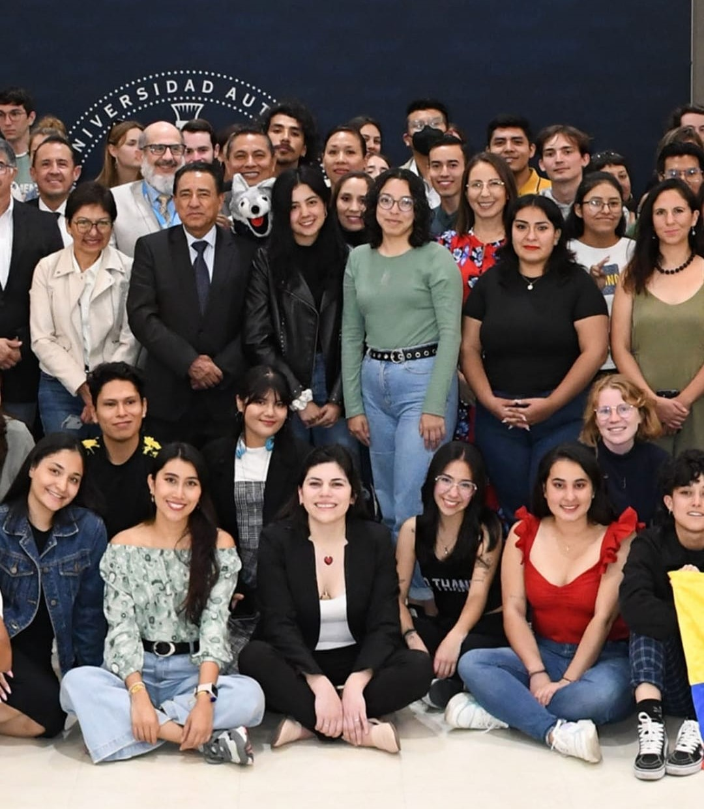

¿Quién soy?
 Mi nombre es Alexa Juárez García, vivo en Xalapa, Ver. Tengo 22 años, mi cumpleaños es el 14 de Enero, significa que soy signo Capricornio. Soy estudiante universitaria, estoy en la carrera de Diseño de la Comunicación Visual, en la Universidad Veracruzana, actualmente estoy de Movilidad Académica en la Benemérita Universidad Autónoma de Puebla. Mis colores favoritos son el azul y morado, soy una persona muy trabajadora y que le es difícil darse por vencida, a pesar de que logro estresarme con facilidad, sin embargo soy muy responsable, honesta y trabajadora.
Mi nombre es Alexa Juárez García, vivo en Xalapa, Ver. Tengo 22 años, mi cumpleaños es el 14 de Enero, significa que soy signo Capricornio. Soy estudiante universitaria, estoy en la carrera de Diseño de la Comunicación Visual, en la Universidad Veracruzana, actualmente estoy de Movilidad Académica en la Benemérita Universidad Autónoma de Puebla. Mis colores favoritos son el azul y morado, soy una persona muy trabajadora y que le es difícil darse por vencida, a pesar de que logro estresarme con facilidad, sin embargo soy muy responsable, honesta y trabajadora.
Me podría describir también como una persona muy reservada, no suelo tener muchas amistades, sin embargo cuando entro en confianza siento que puedo expresarme mejor y con más libertad, disfruto convivir con los pocas relaciones que tengo, son muy valiosas para mi, me preocupo mucho por ellos y siempre quiero lo mejor para todos.
Tengo una gatita de mascota que amo mucho, son mis animales favoritos, siento que son muy parecidos a mi, me encantaría tener más mascotas también, como un perrito o un hamster. No suelo ser muy afiocionada a las actividades al aire libre, me gusta quedarme en casa y descansar, creo que por eso tengo tanto parecido a los gatitos. También me encantaría poder participar en algún alvergue para cuidar de las mascotas indefensas de la calle. 